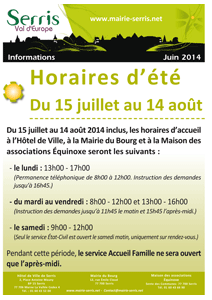
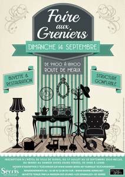

|
|
 |
INSEE : ENQUÊTE SUR L'EMPLOI, LE CHÔMAGE ET L'INACTIVITÉ EN 2014 |
L’Institut National de la Statistique et desÉétudes Économiques (INSEE) réalise une enquête sur l’emploi, le chômage et l’inactivité. Cette enquête se déroulera à Serris du 11 au 30 août 2014.
Quelques ménages seront sollicités. Ils recevront une lettre indiquant l’objet de l’enquête et le nom de l’enquêteur de l’INSEE charger de les interroger.
Cet enquêteur sera muni d’une carte officielle et tenu au secret professionnel. Les réponses des enquêtes resteront anonymes et seront saisies sur ordinateur portable.
Merci de lui réserver un bon accueil. |
|
|
HORAIRES D'ÉTÉ : DU 15 JUILLET AU 14 AOÛT INCLUS |
Du 15 juillet au 14 août 2014, les horaires d'accueil à l'Hôtel de Ville, à la Mairie du Bourg et à la Maison des associations Équinoxe seront les suivants :
- le lundi : 13h00 - 17h00 (Permanence téléphonique de 8 h00 à 12h00.
Instruction des demandes jusqu'à 16h45.)
- du mardi au vendredi : 8h00 - 12h00 et 13h00 - 16h00 (Instruction des demandes jusqu'à 11h45 le matin et 15h45 l'après-midi.)
- le samedi : 9h00 - 12h00 (Seul le service État-Civil est ouvert le samedi matin, uniquement sur rendez-vous.)
Pendant cette période, le service Accueil Famille ne sera ouvert que l'après-midi.
Le service Animation est transféré à la Mairie du Bourg - 12 rue Émile Cloud. |
|
 |
Dimanche 14 septembre 2014, de 9h00 à 18h00, route de Meaux
Inscription du 17 juillet au 10 septembre, à l'Hôtel de Ville |
Structure gonflable, buvette et restauration.
Inscription à l'Hôtel de Ville de Serris, du 17 juillet au 10 septembre 2014 inclus, du mardi au samedi (hors jours fériés), de 9h00 à 11h45.
- Tarifs : (minimum 2 m linéaires)
- 4 € le mètre linéaire pour les Serrissiens,
- 7 € le mètre linéaire pour les extérieurs,
- 33 € le mètre linéaire pour les professionnels
- Pièces à fournir :
- justificatif de domicile,
- pièce d'identité,
- paiement intégral de la réservation (Les chèques sont à établir à l'ordre du "Trésor Public"),
- le règlement (remis lors de l'inscription) signé, lu et approuvé,
- l'attestation (remise lors de l'inscription) signée, lue et approuvée.
- Dossier d'inscription à télécharger
|
|
 |
| |
 |
Les animations ouvertes sont des animations gratuites organisées par les animateurs du centre de loisirs à destination de tous les enfants de Serris, même ceux qui ne sont pas inscrits au centre de loisirs.
-
9 juillet : atelier "fresk and ball".
6-8 ans. Parc des communes. 14h30-16h
-
15 juillet : Jeu "douaniers/contrebandiers"
6-8 ans. Parc du centre urbain. 14h30-16h
-
16 juillet : Jeu "balle brulante".
4-6 ans. Parc des communes. 14h30-16h
-
17 juillet : atelier "marionnettes en herbe".
3-4 ans. Place Thomas le Pileur. 10h-11h
-
23 juillet : jeu "gendarme memory".
5-6 ans. Parc du centre urbain. 14h30-16h
-
25 juillet : jeu "l'attaque du train".
9-12 ans. Parc des communes. 14h30-16h
-
29 juillet : jeu "à la recherche du prince".
3-4 ans. Parc du centre urbain. 10h00-11h15
-
29 juillet : atelier "fusée à eau".
9-12 ans. Parc des Communes. 14h30-16h.
-
14 août : jeu "à vos parcours".
3-4 ans. Place Thomas le Pileur. 10h-11h.
-
14 août : jeu "l'attaque du train, le retour".
9-12 ans. Parc des Communes. 14h30-16h.
-
20 août : jeu "poules/renards/vipères".
6-8 ans. Parc des Communes. 14h30-16h.
- 21 août : jeu "sos star". 4-6 ans.
Parc des Communes. 14h30-16h.
> Télécharger le programme complet
Annulation systématique des animations en cas de pluie.
Conditions obligatoires pour la participation aux animations : avoir le numéro de téléphone, le nom et l'adresse des parents.
Nous conseillons fortement de prévoir une tenue confortable avec baskets, un sac à dos avec casquette et bouteille d'eau. Pour participer à l'animation merci de respecter les horaires de début et de fin de séance. |
|
 |
| |
|
| VACANCES D'ÉTÉ : LES STRUCTURES JEUNESSE VOUS ACCUEILLENT |
Le Club Pré-ados et la Maison des Jeunes vous accueillent cet été
Club Pré-ados : rencontres sportives,
soirée laser game,
atéliers créatifs, balade en vélo,
soirée repas, karting, sorties, etc
> Télécharger le programme complet
Maison des Jeunes : sorties, sport, stages, réalisation vidéo, soirées, p'tit dej bien être, mini-séjour, etc.
> Télécharger le programme complet |
|
|
| SÉJOUR EN FRANCHE-COMTÉ POUR LES CM1-CM2 |
| Du 16 au 23 août 2014 - Inscription du 8 au 15 février 2014 |
Séjour en moyenne montagne pour 15 enfants en CM1-CM2
Ce séjour a pour thématique la découverte de la moyenne montagne dans le Parc naturel du Haut-Jura.
Activités proposées :
- randonnées pédestre et à vélo, courses d'orientations, baignades, veillées, parcours aventure,
- visite du musée du jouet et d'une fromagerie, visite des lacs…
Hébergement :
Les 15 enfants accueillis sur ce séjour seront hébergés dans un gîte situé dans un hameau du village de Longchaumois appelé "le Rosset" à 1 050 mètres d'altitude. Le gîte a une surface de 300 m² répartie sur 3 niveaux et propose la gestion libre (vie en collectivité, préparation des repas et tâches quotidiennes effectuées par les enfants).
Les enfants seront encadrés par une équipe éducative mixte.
Transport :
Le transport est prévu en car avec départ et arrivée à Serris. Sur place, les déplacements vers les activités se feront en minibus.
Inscription :
Dosiers d'inscription disponibles à partir du lundi 20 janvier 2014 auprès du service Accueil Famille à l'hôtel de Ville de Serris ou en téléchargement.
Inscription auprès du service Accueil Famille entre le 8 et le 15 février 2014.
Attention : le nombre de places étant limité, les inscriptions seront prises dans l'ordre d'arrivée des dossiers.
Les familles serrissiennes seront prioritaires.
Documents à fournir pour les séjours et tarifs (en fonction du quotient familial) disponibles sur la plaquette de présentation des séjours éducatifs 2014 de la ville de Serris.
|
|
> Consulter la plaquette
> Télécharger la plaquette
> Dossier d'inscription |
| |
|
| VENEZ DANSER : DÉMONSTRATIONS DE DANSES ET COURS D'INITIATION GRATUITS |
Samedi 30 août et samedi 13 septembre à partir de 14h00, place de Toscane |
Cours d'initiation gratuits : salsa, zumba kids, bachata, rock...
Piste de danse ouverte à tous débutants et initiés
14h00/17h30 : rock, west coast
15h30/16h00 : démonstration de danses irlandaises et claquettes américaines
17h30/21h00 : danses latines
Organisé par Serris Commerces et Entreprises en partenariat avec la ville de Serris
contact@lbc-home.com |
|
|
| Samedi 30 août 2014, 14h00, Maison communale des 4 Saisons |
| Centre Social Intercommunal |
| Du mercredi 5 février au samedi 30 août, médiathèques du Val d'Europe |
Du mercredi 5 février au samedi 30 août 2014, le réseau des médiathèques du SAN du Val d'Europe vous invite à découvrir sa nouvelle exposition sur le thème de l'eau : un parcours documentaire, multi-supports, original et ludique à travers les collections de la Médiathèque du Val d'Europe.
Une journée d'ouverture est organisée le samedi 8 février à la Médiathèque du Val d'Europe : Ateliers créatifs, spectacle, conférence… seront proposés pour l'occasion.
> + d'infos
> Site du réseau des médiathèques du Val d'Europe
|
|
 |
|
|
|